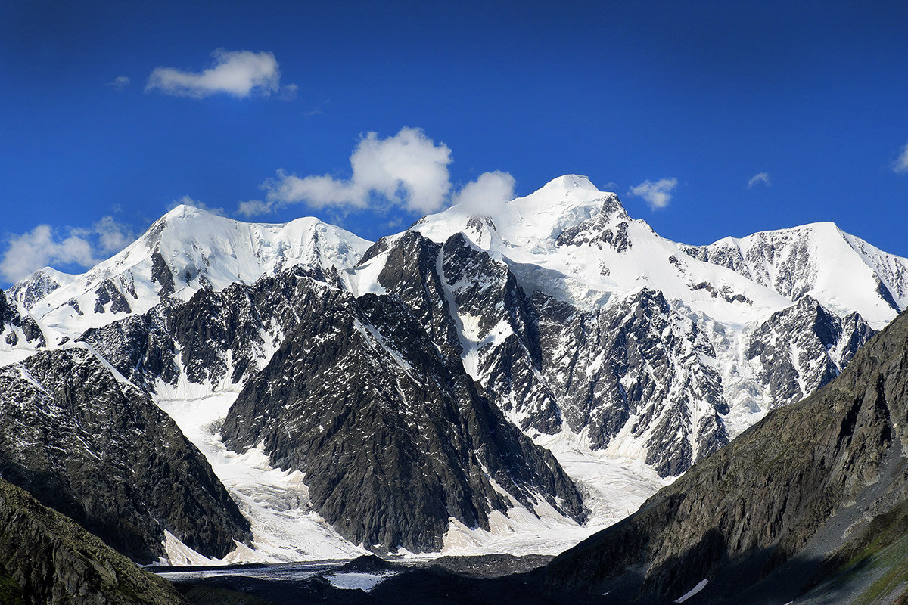

Altay Republic
Путешествуй с нами, оно того стоит!
Советуем посетить
| № | Место | Км. от аэропорта Горно-Алтайска | Фото |
|---|---|---|---|
| 1 | Мультинские озера | 420 | |
| 2 | Гора Белуха | 600 |  |
| 3 | Алтайский Марс | 420 | |
| 4 | Перевал Кату-Ярык | 454 | |
| 5 | Акташский ретранслятор | 365 | 
|
| 6 | Курайская степь | 810 | 
|
| 7 | Красная гора | 450 | |
| 8 | Шавлинские озера | 500 | 9 | Чемальская ГЭС | 130 |
| 10 | Плато Укок | 612 |
Н.К. Рерих говорил:
«На высоких склонах Алтая старые сосны и ели заняты мирным общением. Они знают много – эти горные леса. Они стоят в изумлении перед снежными хребтами гор. Их корни знают, какие богатства, какие неисчислимые минеральные сокровища хранятся в каменных глубинах гор для будущего процветания человечества».